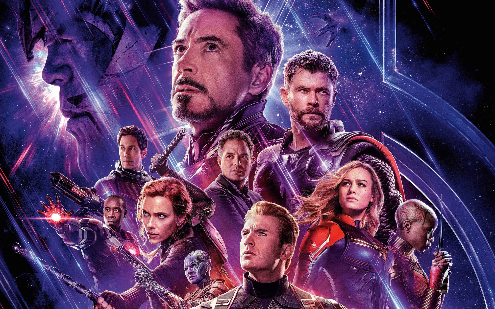
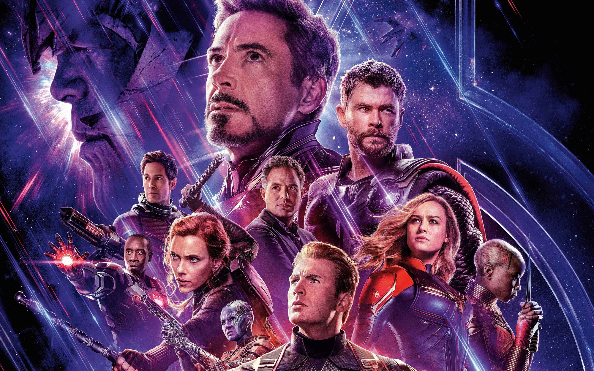

Top 5 bộ phim điện ảnh có doanh thu cao nhất 2019.
| Đạo diễn | Athony Russo và Joseph
Russo |
| Diễn viên | Robert John Downey Christopher Robert "Chris" Evans Mark Alan Ruffalo Chris Hemsworth Scarlett Johansson Jeremy Lee Renner Donald Frank Cheadle Paul Stephen Rudd Brianne Sidonie Desaulniers Karen Gillan Danai Jekesai Gurira Bradley Charles Cooper Josh James Brolin |
| Quốc gia | Mỹ |
| Doanh thu | 2.797 tỉ USD |
| Nội dung | Phim bắt đầu vào năm 2018 khi Clint Barton (Hawkeye) cùng vợ con đi dã ngoại trong thời gian bị
quản thúc. Ngay khi anh rời mắt khỏi gia đình mình một lát, họ tan biến thành tro bụi do là nạn
nhân của sự kiện Búng tay. Ba tuần sau, Carol Danvers (Captain Marvel) tìm thấy Tony Stark (Iron
Man) và Nebula trôi dạt ngoài không gian trên con tàu vũ trụ và giải cứu họ, đưa hai người về
Trái Đất và gặp lại những người còn sống sót khác, bao gồm Romanoff (Black Widow), Bruce Banner
(Hulk), Steve Rogers (Captain America), Rocket, Thor, Pepper Potts và James Rhodes (War
Machine). Biệt đội lên kế hoạch lấy lại những Viên đá Vô cực từ Thanos với ý định sử dụng chúng
để đảo ngược sự kiện Búng tay. Tìm thấy Thanos tại một hành tinh xa xôi nơi mà hắn lại sử dụng
các viên đá vào hai tuần trước, cả nhóm (trừ Stark ở lại Trái Đất dưỡng thương) dễ dàng bắt được
Thanos nay đã suy yếu, nhưng Rocket phát hiện những viên đá vô cực đã không còn. Hắn tiết lộ đã
phá hủy hết các viên đá để chúng không dùng được nữa. Trong cơn tức giận, Thor chặt đầu Thanos,
mọi người trở về Trái Đất với bàn tay trắng. 5 năm sau (2023), Trái Đất vẫn hoang tàn. Phần lớn thành viên đã mỗi người một ngả, trong đó Danvers bay vào vũ trụ để giải quyết các hậu quả Thanos gây ra, còn Barton lấy biệt danh mới là Ronin và truy lùng xã hội đen trên khắp thế giới sau khi biết chuyện xảy ra với vợ con anh. Sau khi tình cờ được giải thoát khỏi Lượng tử Giới nhờ một con chuột vô thức bước lên các nút điều khiển, Scott Lang (Ant-Man) mới biết sự kiện Búng tay rồi đến trụ sở Avengers gặp Romanoff và Rogers - những người duy nhất còn ở lại. Từ trải nghiệm của bản thân, Lang cho biết năm năm vừa qua đối với anh chỉ là năm giờ bị mắc kẹt và du hành thời gian là có thể xảy ra. Cả ba tìm đến Tony Stark, giờ đã kết hôn với Pepper Potts và có con gái tên Morgan Stark, và nêu giả thuyết quay ngược lại quá khứ để thu thập các Viên đá Vô cực trước khi Thanos lấy được chúng. Stark ban đầu từ chối vì lo sợ thay đổi lịch sử sẽ ảnh hưởng tới gia đình mới của mình, vì vậy họ đành gặp Banner, nay đã hợp nhất ý thức của mình với ngoại hình của Hulk và không còn phải trốn tránh xã hội. Hiểu biết về Lượng tử giới nằm ngoài chuyên môn khiến Banner tạo ra cỗ máy có tác dụng ngược là đưa thời gian qua Lang. Về phần mình, sau khi thấy ảnh chụp chung Peter Parker (Spider-Man) cầm ngược bằng và được Potts động viên, Stark quyết định tham gia cùng những thành viên khác và xây dựng thành công cỗ máy thời gian, đồng thời trả lại chiếc khiên được sửa cho Rogers. Banner bác bỏ đề xuất về quá khứ giết "em bé Thanos" của Rhodes, giải thích rằng việc thay đổi quá khứ không thay đổi hiện tại mà thay vào đó, tạo ra những dòng thời gian song song. Banner và Rocket đến Tønsberg, Na Uy, còn được gọi là Tân Asgard bởi những người Asgard còn sống, để gọi Thor, giờ là một gã nghiện bia rượu quá khổ và ham chơi điện tử với Korg và Miek vì hối hận đã bỏ lỡ cơ hội ngăn chặn Thanos. Tại Tokyo, Romanoff khuyên bảo Barton trở về sau khi chứng kiến anh vừa tàn sát một tổ chức Yakuza. Các thành viên sống sót của Avengers tập hợp và chia nhóm để quay lại quá khứ và thu thập đá Vô cực. Tất cả sự kiện sau chỉ diễn ra trong vòng năm giây ở dòng thời gian chính: Tại New York năm 2012, Banner, Rogers, Lang và Stark xuất hiện ngay Trận chiến ở thành phố này rồi chia nhau đi lấy các viên đá Thời gian (Time Stone), Không gian (Space Stone) và Trí tuệ (Mind Stone). Tại Thánh đường New York, Thượng Cổ Lão nhân (Ancient One) đồng ý cho Banner mượn Viên đá Thời gian sau khi được kể chuyện đệ tử và người kế vị tương lai là Stephen Strange (Doctor Strange) đã tự giao nó cho Thanos vì mục đích nào đó, sau đó Banner quay về hiện tại. Vận dụng hiểu biết từ tương lai, Rogers nhận được Cây Trượng từ nhóm gián điệp của HYDRA trong S.H.I.E.L.D. chỉ bằng lời thì thầm: HYDRA muôn năm (Hail Hydra), rồi anh gặp và đánh bại chính mình trong quá khứ, người khăng khăng cho rằng mình đang chạm trán Loki. Vì ngay trước đó, Lang và Stark đã thất bại trong việc lấy khối Tesseract, vô tình tạo cơ hội để Loki thật lấy được và trốn thoát cùng nó. Do đó, sau khi giao Cây Trượng cho Lang để anh quay về trước, Rogers và Stark du hành tiếp về quá khứ: Tại Trại Lehigh vào năm 1970, hai người cải trang để lấy phiên bản cũ của khối Tesseract và thêm hạt Pym để quay về hiện tại. Ngay khi lấy được khối Tesseract, Tony vô tình gặp bố của mình, Howard Stark, bấy giờ đang đợi con chào đời. Cuộc gặp gỡ này giúp Tony hiểu được tấm lòng của bố mình, và anh đã tận dụng cơ hội này để gián tiếp cảm ơn ông. Trong khi đó, Rogers đánh cắp một số Hạt Pym từ phòng thí nghiệm của Hank Pym, sau đó anh nhìn thấy Peggy Carter, người yêu của anh trong văn phòng của cô qua cửa sổ. Sau một khoảnh khắc quyết định, Rogers lặng lẽ rời đi. Gặp nhau ở bên ngoài, cả hai cùng nhau quay về hiện tại. Tại Asgard năm 2013, ngay trước cuộc chiến với Dark Elf, trong lúc Rocket lấy Viên đá Thực Tại bằng cách sử dụng thiết bị trích xuất Aether trong người Jane Foster, Thor tái ngộ mẹ của mình, Frigga, và mượn cây búa Mjolnir. Sau một hồi trò chuyện, cả hai tạm biệt Frigga và quay trở về hiện tại. Tại Morag năm 2014, Barton và Romanoff trước đó được giao con tàu vũ trụ Benatar và sử dụng nó để đến hành tinh Vormir. Còn Nebula và Rhodes ngồi chờ Peter Quill (Star-Lord) dẫn đường và đánh bất tỉnh, sau đó lấy dụng cụ mở cửa của anh ta và đi vào thu thập được Quả Cầu.Rhodes trở lại hiện tại cùng Viên đá, nhưng Nebula bị mất kiểm soát do xung đột ý thức với chính mình trong quá khứ (2014) và kẹt lại ở Morag. Thanos (phiên bản quá khứ năm 2014) tóm được Nebula tương lai và xem dữ liệu trong bộ nhớ của cô, nhờ đó hắn biết được kế hoạch của đội Avengers để đảo ngược thành công mình đạt được ở tương lai. Hắn cử Nebula phiên bản năm 2014 quay trở lại hiện tại và trà trộn vào trong đội Avengers. Quay trở lại Barton và Romanoff, họ đặt chân tới hành tinh Vormir, gặp linh hồn Red Skull để thu thập Viên đá Linh hồn (Soul Stone) và biết rằng, một người chỉ có thể sở hữu Viên đá bằng cách mất đi một người mình yêu quý. Sau một hồi tranh chấp, Romanoff chủ động buông tay rơi xuống vực, để lại Barton đau lòng quay về hiện tại một mình với Viên đá. Sau khi trở về hiện tại cùng sáu Viên đá, những người còn lại mới hay tin Romanoff đã hy sinh nên đã dành thời gian mặc niệm cô ở bờ hồ. Sau khi bình tĩnh trở lại, họ lắp những viên đá vào một chiếc Găng tay Nano. Banner, người duy nhất vừa chịu được bức xạ gamma vừa có tinh thần đủ vững vàng, búng tay thành công để hồi sinh những người đã bị xóa sổ, tuy tay phải anh và chiếc găng chịu tổn hại nặng từ các viên đá ngay từ khi đeo găng. Nhưng cùng lúc đó, Nebula quá khứ sử dụng cỗ máy thời gian để đưa Thanos và quân đoàn của hắn (ở năm 2014) đến hiện tại. Trụ sở Avengers nhanh chóng bị hủy diệt, và trong đống đổ nát, Barton tìm được chiếc Găng tay cùng sáu Viên đá. Nebula hiện tại thuyết phục Gamora chống lại Thanos, rồi đành tiêu diệt bản thể quá khứ của mình vì cô ta không nghe theo. Thanos, giờ đây đã đổi ý, quyết định sử dụng các Viên đá để hủy diệt cả vũ trụ và tạo một vũ trụ mới không chút tàn dư của cái cũ. Rogers, Stark và Thor hợp sức tấn công Thanos nhưng không đánh bại được hắn, ngay cả khi Rogers sử dụng Mjolnir. Trước nguy cấp, Doctor Strange, Wong cùng đội quân pháp thuật xuất hiện, họ triệu hồi các siêu anh hùng và các đội quân của Wakanda, Asgard, Ravagers, gồm tất cả những người sống sót hoặc đã được hồi sinh, cùng Danvers, người đã phá hủy con tàu của hắn khi cô đến, chống lại Thanos và binh đoàn của hắn. Sau một trận chiến dai dẳng và kịch liệt, với việc phần lớn anh hùng đang bận chiến đấu hoặc đã bị đánh bại, Thanos lấy được chiếc găng tay và búng tay lần nữa nhưng không có gì xảy ra. Thanos nhìn lại thì các viên đá đã bị Stark đã lấy trộm lại vào bộ giáp Mark LXXXV của mình và anh nói câu cuối cùng "Tôi là Người Sắt" và búng tay. Cú búng tay đã xóa sổ Thanos cùng toàn bộ tay sai của hắn. Sức mạnh quá lớn của các viên đá sau đó cũng đã cướp đi mạng sống của anh. Sau đám tang của Stark, Thor nhường ngai vàng của Asgard cho Valkyrie và gia nhập Vệ binh Dải ngân hà (Guardians of the Galaxy). Quill bắt đầu tìm Gamora.Rogers đem trả các Viên đá và búa Mjolnir về đúng với vị trí của chúng trong quá khứ, rồi quyết định sống nốt những năm tháng mà anh đã bỏ lỡ sau khi bị đóng băng vào năm 1945. Ở hiện tại, Rogers, nay đã già, trao chiếc khiên từ quá khứ của mình cho Sam Wilson. Kết thúc phim là cảnh hạnh phúc của Rogers khi được khiêu vũ cùng với vợ đã cưới của mình là Peggy Carter rồi hôn nhau. Sau phần credit của phim là vài tiếng rèn kim loại vang lên trong lúc logo Marvel studios xuất hiện. Đây là tiếng rèn của Tony Stark khi đang rèn áo giáp Mark I, như một sự tưởng niệm với anh. |
| Ảnh phim |
 

|